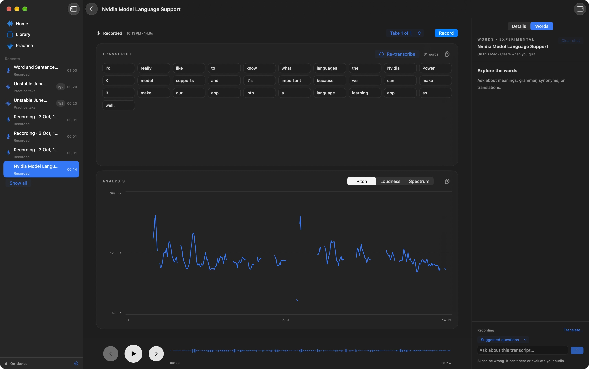

Record with your mic
Try a phrase, an interview answer, or a talk. Review measured pauses, pitch, and loudness on the timeline.
Your private speaking room for Mac
Record yourself. Practise with a speaker you admire. Explore the words behind a phrase, then give it another take.
macOS 26+ · Free early access · No account
ichido / ee-chee-doh /
A phrase from another language. An interview answer. A line from a talk. Start with something you want to say, and keep your attempts together.

Import audio or video, or capture what’s playing on your Mac. Choose a short excerpt and listen to its rhythm, pauses, and emphasis.
Click a transcribed word to replay that moment.

Explore meanings, grammar, synonyms, and translations from the transcript. The Words inspector runs on your Mac with available Apple Intelligence.
Experimental and off by default. You can skip this step.
See how Words works
Use Listen & Repeat for one attempt at a time. Or use Speak Along with headphones to follow the reference as it plays.
Every valid attempt stays in the same practice session.

Replay both versions and inspect timing, pitch shape, and loudness. When enough words reliably match, two measured practice targets help you choose what to try next.
This compares delivery. It does not grade your accent or certify pronunciation.
Real app captures from main and the developer’s practice sessions. Earlier labels “Mimics” and “Ask” become “Practice” and “Words” in Ichido. Transcription and language replies can contain errors.
Sometimes repeating a phrase starts with understanding it. Open Words beside your transcript to ask a question, follow a thought, or explore another way to say something.
Enable it in Settings → Experiments. Chat requires available Apple Intelligence. Translation languages may need a download.
Words works with text and can make mistakes. It cannot hear your audio or evaluate your speaking. Conversations clear when you quit.
Practise a language, rehearse a presentation, or simply hear yourself back. Choose the source that fits.
Try a phrase, an interview answer, or a talk. Review measured pauses, pitch, and loudness on the timeline.
Turn a moment from a talk, podcast, or browser clip into a reference for practice.
Bring in an audio or video file. Ichido prepares the audio locally so you can listen and practise.
 Playing a clip in your browser? Use Capture Mac audio. There’s no YouTube URL import.
Playing a clip in your browser? Use Capture Mac audio. There’s no YouTube URL import.

Start with your own recording whenever you want. Replay a word, notice a pause, and keep another take alongside it.
Ordinary recordings show measurements. Reference practice adds matched comparison targets.
Your recordings, transcripts, analysis, and language chat stay on your Mac.
No account. No recording uploads. No analytics. Update checks and optional model downloads use the network.
YOUR VOICE BELONGS TO YOU.Ichido is the new name for Voice Coach. Same local library, with a clearer home for speaking and language practice.
Choose your speech language in Settings → Transcription. Apple transcribes supported languages on-device; missing models can be downloaded there. Sessions keep their language, and you can re-transcribe an existing take or reference. Optional Parakeet automatically recognises 25 European languages; Japanese requires Apple transcription. Availability varies by language, device, and model.
Ichido compares acoustic delivery: timing, pitch, and loudness. It does not provide a phoneme-level pronunciation score or a fluency assessment. Reliable matching and similar wording are needed for word-level comparison targets. Listen to the recordings alongside the measured evidence.
Words is the experimental language inspector, formerly Ask. Enable it in Settings → Experiments to explore transcript meanings, grammar, synonyms, and translations. Chat requires available Apple Intelligence and is off by default. Its answers can be incorrect; it cannot hear or evaluate audio. Conversations are temporary and clear when you quit.
Ichido processes recordings, analysis, supported transcription, and language chat on your Mac. It has no recording upload path and requires no account. Update checks and optional speech or translation model downloads use the network. If you explicitly copy an analysis prompt into an external AI service, that service receives what you paste.
Voice Coach is becoming Ichido. The existing app identifier and storage location are preserved, so your local recordings and preferences remain available. The Practice sidebar contains reference sessions previously called Mimics.
Say it “ee-chee-doh.” Ichido means “one time” in Japanese. The practice story is inspired by mō ichido, “once more”: listen, give it a take, and try again.
macOS 26 or later. Apple Silicon is recommended, and experimental chat needs available Apple Intelligence. Audio analysis still works when transcription is unavailable. Ichido is free while in early access. It is a practice tool, with acoustic coaching signals; it is not speech therapy or a medical assessment.
The early-access app is ad-hoc signed and not Apple-notarized yet, so macOS may block its first launch. The download details explain permissions and installation. The existing updater feed is retained for Voice Coach users.
Free while in early access. No account required.
The current release is ad-hoc signed and not Apple-notarized.
Microphone access is needed to record. System audio access is needed when you capture Mac audio.
Open Settings → Transcription after installation. Apple language models and the optional ~714 MB Parakeet model are downloaded separately.